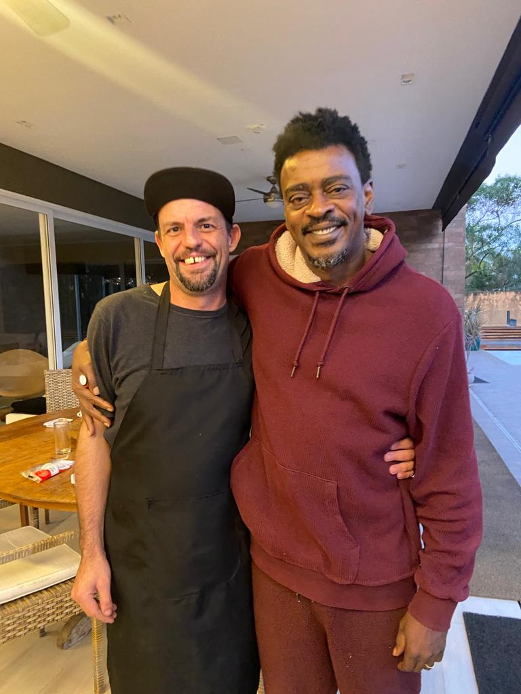
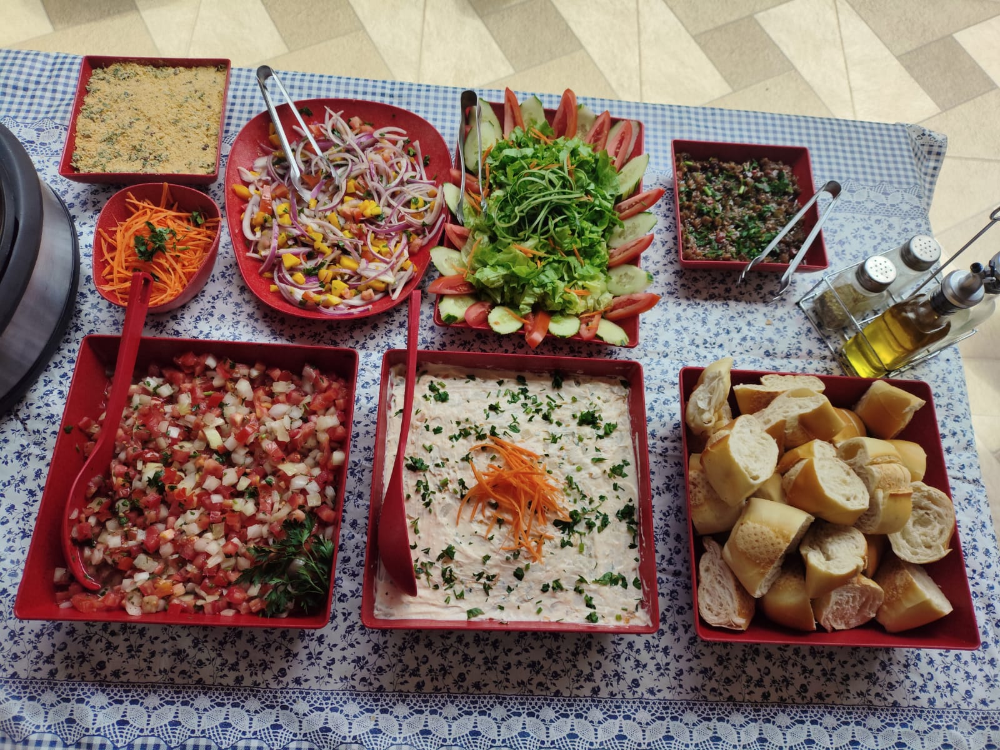
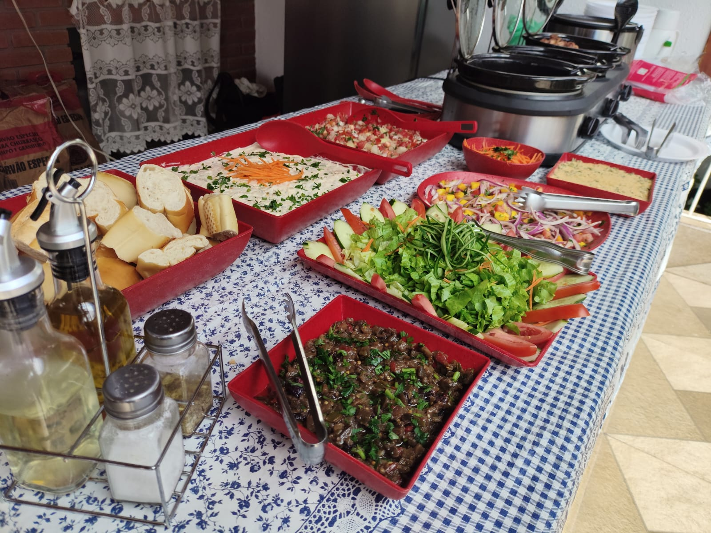
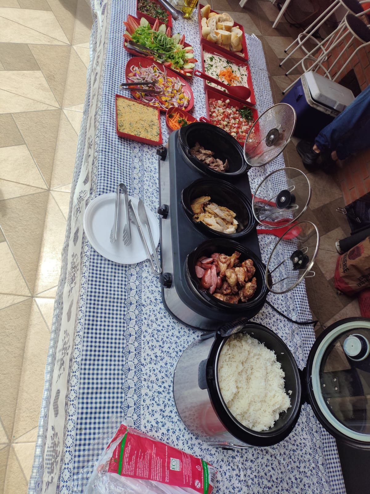

Experiência gastronômica completa com cortes nobres e serviço de elite.
Acessar Agenda
Com mais de 15 anos de experiência na beira do fogo, Eduardo Quinelato transformou a paixão pelo churrasco em uma carreira de sucesso. Especialista em cortes argentinos e fogo de chão, ele garante que cada evento seja único.
"Meu compromisso não é apenas assar carne, é criar momentos memoráveis através do paladar."
Um pouco da nossa estrutura, acompanhamentos frescos e carnes preparadas na hora para os seus convidados.



Clique no botão abaixo para acessar a agenda de 2026 e escolher uma data.
(11) 98775-1262
eduardochurrasqueiro@gmail.com
@eduardochurrasqueiro | @gabyedu.24
O que dizem quem já viveu a experiência com o Eduardo Churrasqueiro
"Contratei o Eduardo para o aniversário de 50 anos do meu marido e foi a melhor decisão! As carnes estavam no ponto perfeito, o atendimento impecável e os convidados não pararam de elogiar. Com certeza vou contratar de novo!"
"Excelente profissional! Fez o churrasco na nossa confraternização de empresa com mais de 80 pessoas e tudo saiu perfeito. Pontual, organizado e as carnes estavam simplesmente maravilhosas. Super recomendo!"
"O Eduardo transformou o casamento da minha filha num evento gastronômico inesquecível. Todos os cortes estavam perfeitos, o buffet bem montado e a equipe super atenciosa. Valeu cada centavo!"
"Já é a terceira vez que contrato e nunca decepciona. A picanha e o costão na brasa são de outro nível. A equipe é muito educada e deixam tudo limpinho depois. Nota 10 sempre!"
"Surpreendeu demais! Pensava que seria um churrasco comum mas o Eduardo trouxe uma experiência completa: cortes argentinos, acompanhamentos frescos e um serviço de primeiro mundo. Os convidados adoraram!"
"Fez o churrasco do meu filho de 15 anos e foi um sucesso total. Mais de 120 pessoas bem servidas, carne sem parar e nenhum problema. Profissionalismo do início ao fim. Recomendo de olhos fechados!"